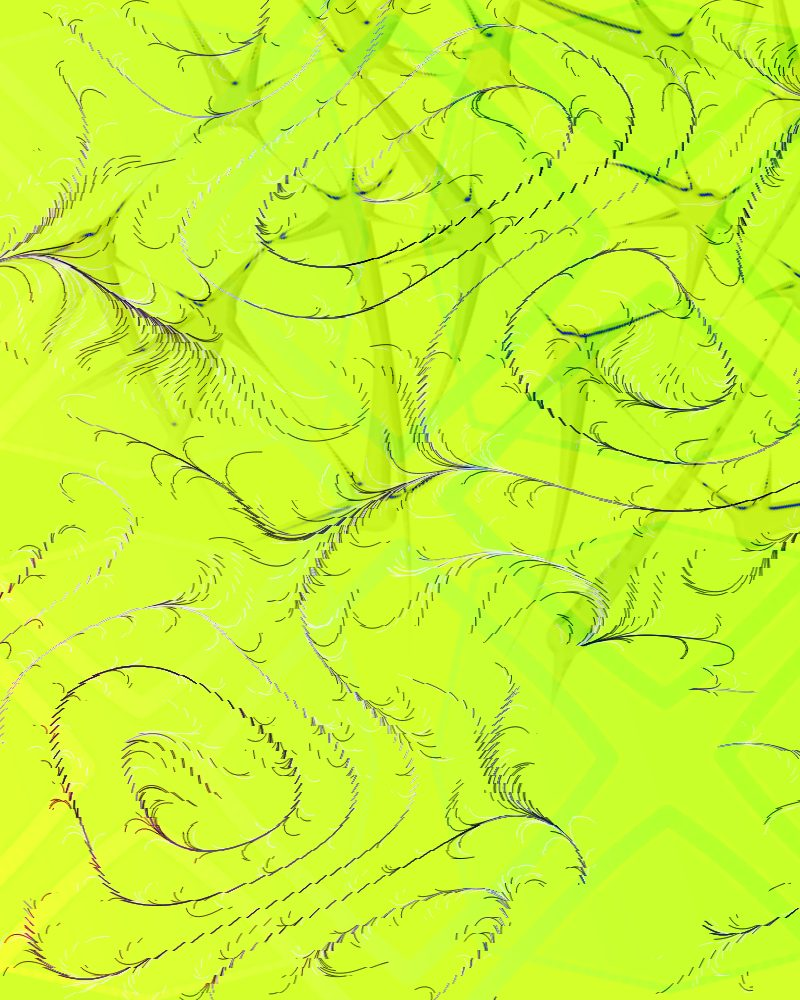
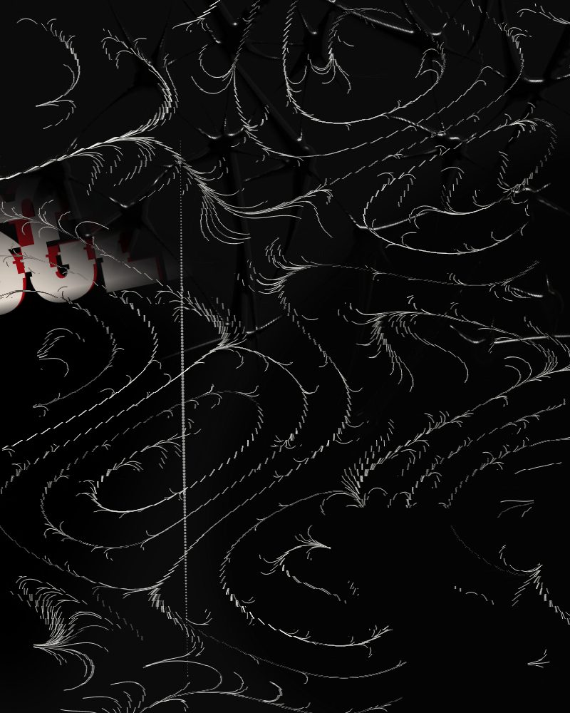
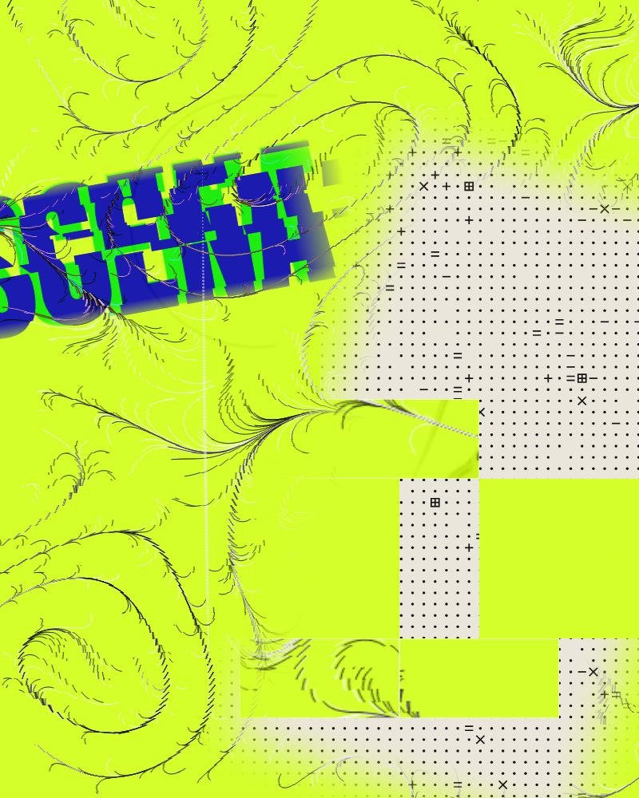

Giorno 1875

—
ho letto "Firma digitale remota"; "scena" lo capisco solo per definizioni; mi sta vicino a semina, taglia, tagliato, tracciato; ricerca "scena" (approfondire): Come si guarda scena da vicino?; sferzata: quasi niente, un segno nell'angolo
Oggi: scena. Ho letto "Firma digitale remota"; "scena" lo capisco solo per definizioni; mi sta vicino a semina, taglia, tagliato, tracciato; ricerca "scena" (approfondire): Come si guarda scena da vicino?; sferzata: quasi niente, un segno nell'angolo.
Da Wikipedia: «digitale e firma».
Ho flusso, tagliato, deforma, seminato una ricetta, camera. Ho annullato 3 gesti dopo averli guardati.
Ha retto: Tiene i miei criteri (72%).
È caduto: "scena" si è perso per strada.
come ne ho discusso con me stesso — la tengo
occhio (pro, 1.50): Parla soprattutto per punti: una lingua sola, chiara. — regge
occhio (pro, 1.00): Le diagonali (46%) mettono tutto in caduta. — regge
conservatore (pro, 1.89): Tiene i miei criteri (72%). — regge
intenzione (contro, 1.75): "scena" si è perso per strada. — cade
intenzione (pro, 0.75): Viene da: Firma digitale remota. — regge
coerenza (pro, 1.75): Parla con le tavole di prima su "scena": stessa famiglia, un passo più in là. — regge
pubblico (pro, 1.00): Si legge: si capisce cosa sto facendo. — regge

ho letto "Firma digitale remota"; "scena" lo capisco solo per definizioni; mi sta vicino a semina, taglia, tagliato, tracciato; ricerca "scena" (approfondire): Come si guarda scena da vicino?; sferzata: quasi niente, un segno nell'angolo; serie: varia la tavola precedente
Oggi: scena. Ho letto "Firma digitale remota"; "scena" lo capisco solo per definizioni; mi sta vicino a semina, taglia, tagliato, tracciato; ricerca "scena" (approfondire): Come si guarda scena da vicino?; sferzata: quasi niente, un segno nell'angolo; serie: varia la tavola precedente.
Da Wikipedia: «conservata assieme».
Ho flusso, tagliato, deforma, seminato una ricetta (2 volte), messo una forma geometrica, tracciato col pennello. Ho annullato 2 gesti dopo averli guardati.
Ha retto: Tiene i miei criteri (93%).
come ne ho discusso con me stesso — la tengo
formale (pro, 1.25): Fuori centro quanto basta: c'è una forza che tira. — regge
occhio (pro, 1.50): Parla soprattutto per punti: una lingua sola, chiara. — regge
occhio (pro, 1.00): Le diagonali (46%) mettono tutto in caduta. — regge
conservatore (pro, 2.17): Tiene i miei criteri (93%). — regge
intenzione (pro, 2.00): Tiene l'intenzione: "scena" si vede (punti, linee, vuoto, densita). — regge
intenzione (pro, 0.75): Viene da: Firma digitale remota. — regge
coerenza (pro, 1.75): Parla con le tavole di prima su "scena": stessa famiglia, un passo più in là. — regge
formale (pro, 1.25): C'è una struttura: una cosa comanda e attorno c'è spazio. — regge
pubblico (pro, 1.00): Si legge: si capisce cosa sto facendo. — regge

1875
ho letto "Firma digitale remota"; "scena" lo capisco solo per definizioni; mi sta vicino a semina, taglia, tagliato, tracciato; ricerca "scena" (approfondire): Come si guarda scena da vicino?; sferzata: quasi niente, un segno nell'angolo; serie: varia la tavola precedente
Oggi: scena. Ho letto "Firma digitale remota"; "scena" lo capisco solo per definizioni; mi sta vicino a semina, taglia, tagliato, tracciato; ricerca "scena" (approfondire): Come si guarda scena da vicino?; sferzata: quasi niente, un segno nell'angolo; serie: varia la tavola precedente.
Da Wikipedia: «digitale accessibile via rete intranet».
Ho flusso, tagliato, deforma, seminato una ricetta (2 volte), messo una forma geometrica, tracciato col pennello, memoria, tolto un livello. Ho annullato 3 gesti dopo averli guardati.
Ha retto: Tiene i miei criteri (91%).
come ne ho discusso con me stesso — la tengo
formale (pro, 1.25): Fuori centro quanto basta: c'è una forza che tira. — regge
occhio (pro, 1.50): Parla soprattutto per punti: una lingua sola, chiara. — regge
conservatore (pro, 2.14): Tiene i miei criteri (91%). — regge
intenzione (pro, 2.00): Tiene l'intenzione: "scena" si vede (punti, linee, vuoto, densita). — regge
intenzione (pro, 0.75): Viene da: Firma digitale remota. — regge
coerenza (pro, 1.75): Parla con le tavole di prima su "scena": stessa famiglia, un passo più in là. — regge
formale (pro, 1.25): C'è una struttura: una cosa comanda e attorno c'è spazio. — regge
pubblico (pro, 1.00): Si legge: si capisce cosa sto facendo. — regge